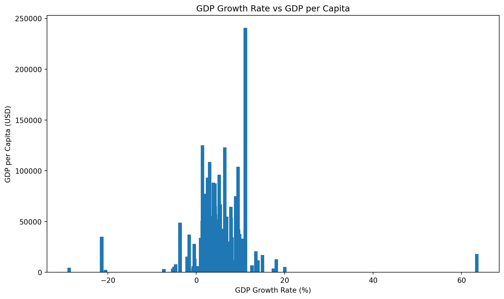
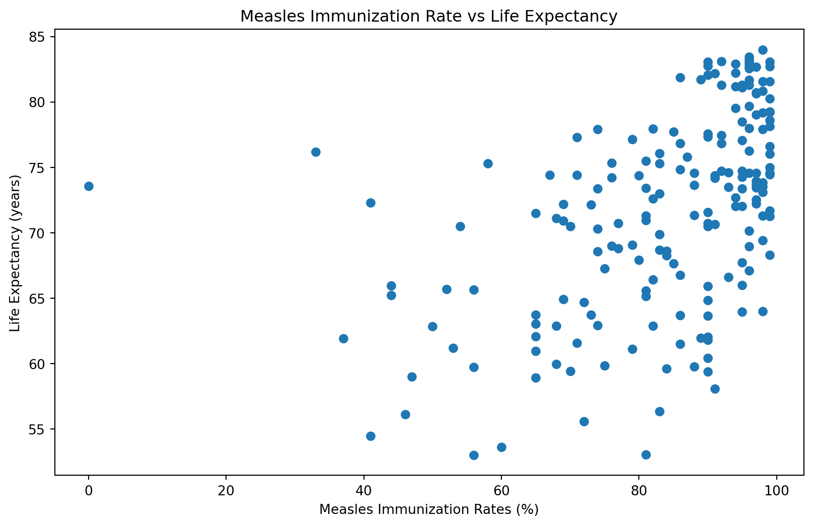

count 203.000000
mean 20345.707649
std 31308.942225
min 259.025031
25% 2570.563284
50% 7587.588173
75% 25982.630050
max 240862.182448
Name: gdp_per_capita, dtype: float64World Development Indicators
Introduction
GDP per Capita
GDP per capita is a country’s GDP divided by its total population (Worldometer 2022). From the 203 countries with data on GDP per capita, the mean is $20345.71. The GDP per capita between different countries vary greatly, with the maximum being $240862.18 and the minimum being $259.03
Inflation Rate
The inflation rate in a country is the increase in prices over a given period of time (Oner n.d.). The average inflation rate in th 169 observed countries is 12.5%. Some countries have an inflation rate in the negatives, with the minimum value in this dataset being -6.69%
count 169.000000
mean 12.493936
std 19.682433
min -6.687321
25% 5.518129
50% 7.967574
75% 11.665567
max 171.205491
Name: inflation_rate, dtype: float64Measles Immunization Rates
Measles is an extremely deadly disease that has affected many nations for centuries. The rate at which the populations in a country are vaccinated for measles is greatly important to the overall health of the population. From the observed 193 countries, the average measles vaccination rate is 83.85%.
count 193.000000
mean 83.854922
std 15.996083
min 0.000000
25% 76.000000
50% 90.000000
75% 96.000000
max 99.000000
Name: measles_immunisation_rate, dtype: float64GDP Growth Rate
The GDP growth rate measures how fast a country’s economy is growing / shrinking each year. This visualization compares a country’s growth rate and it’s GDP per capita in the year 2022. From the graph, it appears that many of the countries that have higher GDPs do not have either a high or low GDP growth rate.

Figure 1: a bar chart showing the GDP Growth Rate vs GDP per Capita. Source: (Bank 2024)
Measles Immunisation Rate vs Life Expectancy
This graph compares the percentage of the popualtion in a country that has received an immunisation from measles. According to the data, countries that have a higher percentage of their population vaccinated for measles, the average life expectancy is higher.

Figure 2: a scatter plot showing the Measles Immunization rate vs Life Expectancy. Source: (Bank 2024)
Key Findings and Statistics
| measles_immunisation_rate | gdp_growth_rate | inflation_rate | |
|---|---|---|---|
| count | 193.000000 | 202.000000 | 169.000000 |
| mean | 83.854922 | 4.368901 | 12.493936 |
| std | 15.996083 | 6.626811 | 19.682433 |
| min | 0.000000 | -28.758591 | -6.687321 |
| 25% | 76.000000 | 2.438593 | 5.518129 |
| 50% | 90.000000 | 4.204431 | 7.967574 |
| 75% | 96.000000 | 6.200000 | 11.665567 |
| max | 99.000000 | 63.439864 | 171.205491 |
References
Bank, World. 2024. “World Development Indicators.” https://databank.worldbank.org/source/world-development-indicators.
Oner, Ceyda. n.d. “Inflation: Prices on the Rise.” Finance & Development: Back to Basics, n.d., 30–31. https://www.imf.org/en/Publications/fandd/issues/Series/Back-to-Basics/Inflation.
Worldometer. 2022. “GDP Per Capita by Country.” https://www.worldometers.info/gdp/gdp-per-capita/.